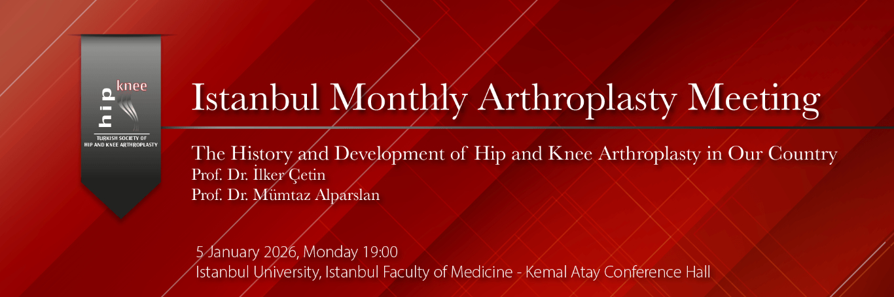

Dear Colleagues,
As we enter a new year, we look not only toward the future but also, with respect and gratitude, to the masters who paved the way for us and to our professional heritage. At this meaningful time, when we are once again reminded of the value of transferring knowledge, dedication, and professional loyalty from one generation to the next, we are pleased to come together for a special meeting.
The first Istanbul Monthly Arthroplasty Meeting of 2026 will be held on Monday, January 5, at 7:00 PM, at Istanbul University Istanbul Faculty of Medicine, Kemal Atay Conference Hall.
At our meeting, under the title “The History and Development of Hip and Knee Arthroplasty in Our Country,” we will have the honor of hosting two pioneering figures of Turkish arthroplasty: Prof. Dr. İlker Çetin and Prof. Dr. Mümtaz Alparslan. They will share with us the knowledge and experience they have gained over professional careers spanning more than half a century, along with their firsthand accounts that have shaped the development of hip and knee arthroplasty in our country. In this session, enriched by contributions from many distinguished colleagues who accompanied them on this professional journey, the past, present, and future of arthroplasty in Türkiye will be discussed.
We wish that the new year brings health, peace, and professional success to us all, and we cordially invite all colleagues to this meaningful meeting, which we believe will be particularly inspiring for our young residents and specialist colleagues.
Moderator:
Prof. Dr. Remzi Tözün
Program:
18:30 – Reception / Dinner
19:00–19:15 – Development of Total Hip Arthroplasty in Our Country
Prof. Dr. İlker Çetin
19:15–19:30 – Development of Total Knee Arthroplasty in Our Country
Prof. Dr. Mümtaz Alparslan
19:30–19:45 – Discussion
19:45–20:00 – Case Discussions
Note: For planning purposes, please contact us prior to the meeting if you have cases you would like to discuss or results you wish to present.
Meeting Contact:
Prof. Dr. Vahit Emre Özden
Email: vahitemre@gmail.com
Prof. Dr. Cengiz Şen
Istanbul University Istanbul Faculty of Medicine
